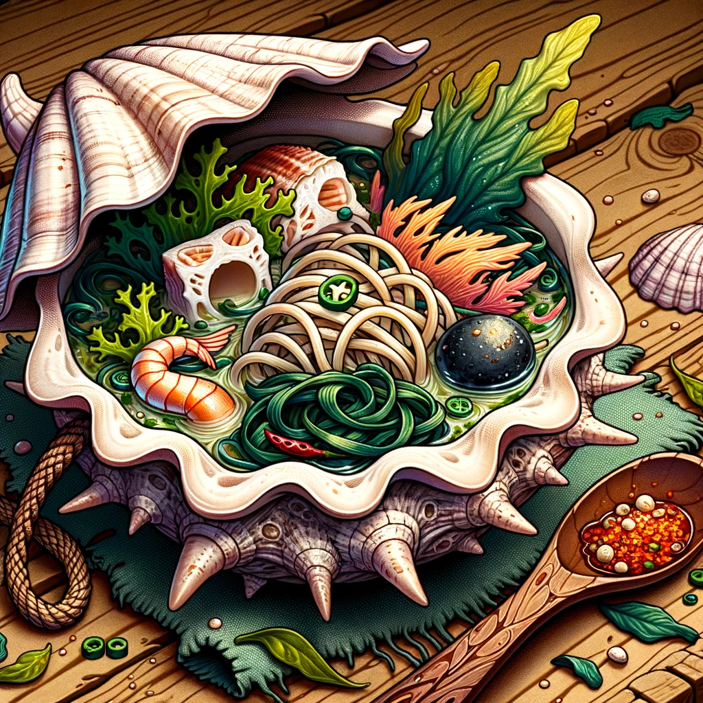

Merman Noodle Soup

Description
Merman noodle soup is a favorite on Fish Island. Here's what you need to make it.
Ingredients:
- 200g of seaweed noodles
- 1 cup of chopped mermaid fin (note: In the real world, we'd use fish fins or fillets)
- 2 tablespoons of Devil Fruit-infused oil (note: In the real world, we'd use sesame or olive oil with some chili flakes for a kick)
- 1 cup of assorted sea veggies (like kelp and sea lettuce)
- Salt and pepper to taste
- 1 tablespoon of chopped scallions for garnish
Steps:
- In a pot, heat the Devil Fruit-infused oil.
- Add the chopped mermaid fin and sauté until lightly golden.
- Pour in 4 cups of water and bring to a boil.
- Add the seaweed noodles and sea veggies, simmer for 5 minutes.
- Season with salt and pepper.
- Serve hot, garnished with scallions.